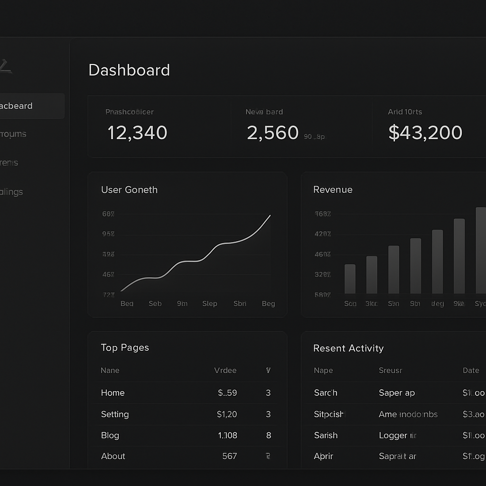

SaaS Platform
01 — Вибраний проєкт
Northwind
Аналітична платформа для обробки мільярдів подій у реальному часі. Складна модель даних, гнучкий білінг та дашборди з live-оновленнями. Від MVP до production за 4 місяці.
Переглянути кейс